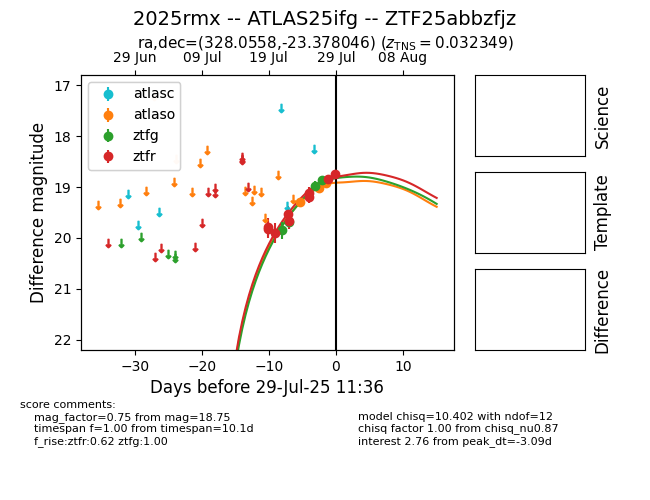

Target 2025rmx at 2025-08-11 14:15, see:
FINK: fink-portal.org/2025rmx
Lasair: lasair-ztf.lsst.ac.uk/objects/2025rmx
ALeRCE: alerce.online/object/2025rmx
TNS: wis-tns.org/object/2025rmx
YSE: ziggy.ucolick.org/yse/transient_detail/2025rmx
alt names
ZTF25abbzfjz (ztf,fink)
2025rmx (tns,yse)
ATLAS25ifg (atlas)
PS25fvx (panstarrs)
coordinates:
equatorial (ra, dec) = (328.0558,-23.37805)
galactic (l, b) = (27.9687,-49.51377)
photometry
last atlaso=18.50, ztfg=18.18, ztfr=18.44
5 atlaso, 12 ztfg, 21 ztfr detections
